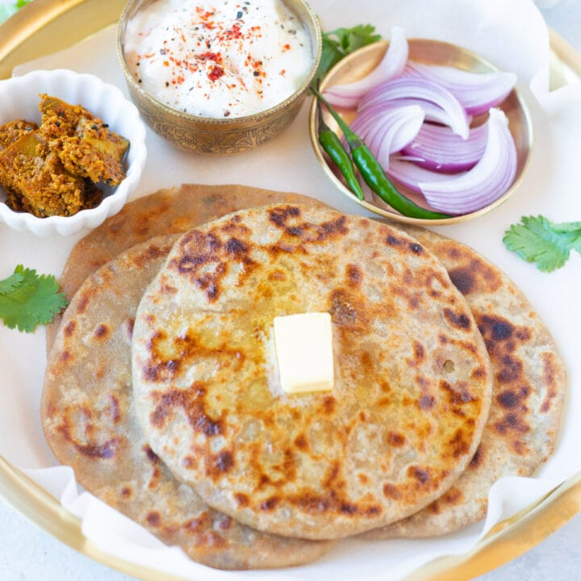

Aaloo Paratha Recipe

Description
Aaloo Paratha is a delicious Indian flatbread stuffed with a spiced potato filling, usually served with butter, yogurt, or pickle.
Ingredients
- 2 cups whole wheat flour
- 3 medium boiled potatoes
- 1 green chili (finely chopped)
- 1 tsp cumin seeds
- 1 tsp coriander powder
- 1 tsp garam masala
- 1 tsp amchur (dry mango powder)
- Salt to taste
- Fresh coriander leaves (chopped)
- Oil or ghee for cooking
Steps
- Make a soft dough using wheat flour and water; keep it aside.
- Mash boiled potatoes, add chopped chili, cumin seeds, coriander powder, garam masala, amchur, salt, and coriander leaves; mix well.
- Divide dough and potato mixture into equal portions.
- Roll out a small ball of dough, place potato filling in center, seal and roll carefully into a flat paratha.
- Cook on a hot tava or skillet, apply oil/ghee, flip and cook until golden brown spots appear.
- Serve hot with yogurt, butter, or pickle.
Back to Homepage